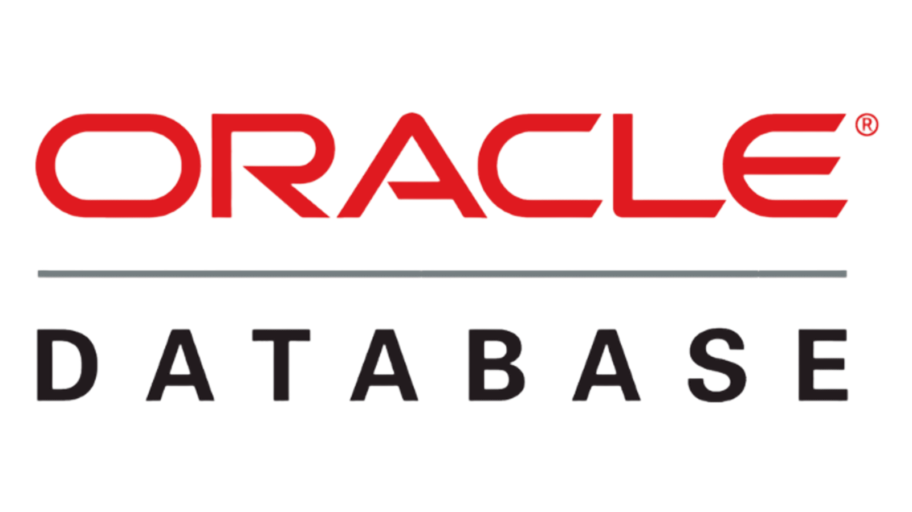
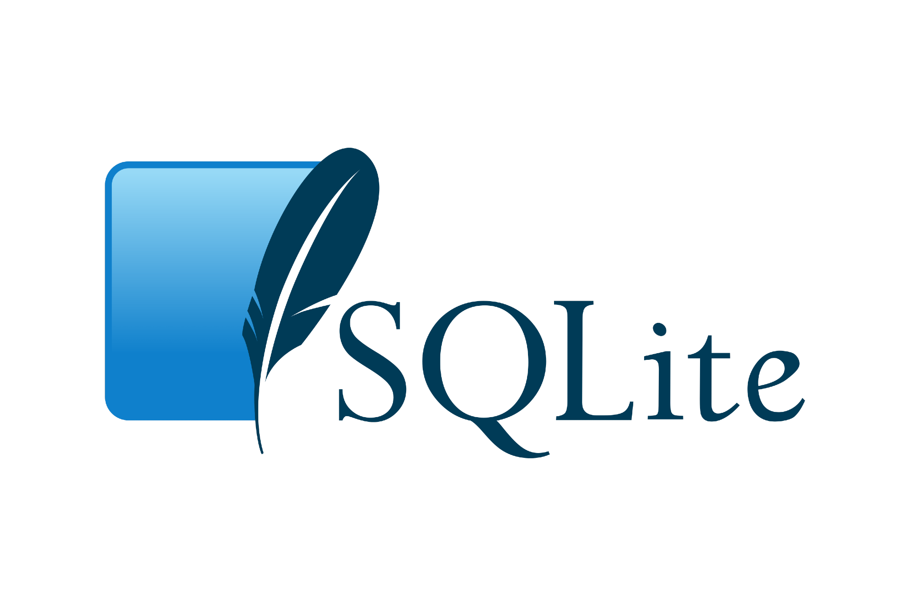

База данных (БД) — это набор информации, который хранится упорядоченно в электронном виде.
БД бывают реляционными и нереляционными.
Остановимся на первых. Ещё их называют табличными — из-за того, что все данные они хранят в виде таблиц. Эти таблицы внутри связаны друг с другом, поэтому получается связная структура.
PostgreSQL
 PostgreSQL — это бесплатная реляционная, мультимодальная СУБД c открытым исходным кодом.
Популярностью у разработчиков и администраторов база данных PostgreSQL обязана своей исключительной
гибкости и целостности. Например, база данных PostgreSQL поддерживает как реляционные, так и нереляционные запросы.
Читать далее. ..
PostgreSQL — это бесплатная реляционная, мультимодальная СУБД c открытым исходным кодом.
Популярностью у разработчиков и администраторов база данных PostgreSQL обязана своей исключительной
гибкости и целостности. Например, база данных PostgreSQL поддерживает как реляционные, так и нереляционные запросы.
Читать далее. ..
PostgreSQL — это бесплатная реляционная, мультимодальная СУБД c открытым исходным кодом.
Популярностью у разработчиков и администраторов база данных PostgreSQL обязана своей исключительной
гибкости и целостности. Например, база данных PostgreSQL поддерживает как реляционные, так и нереляционные запросы.
Читать далее. ..
OracleDB

Oracle Database - это СУБД, разработанная корпорацией Oracle.
База данных Oracle предлагает расширенные функции,
такие как высокая доступность, масштабируемость, безопасность
и настройка производительности Читать далее. . .
MySQL
 MySQL — свободная реляционная СУБД.
Разработку и поддержку MySQL осуществляет корпорация Oracle.MySQL является
решением для малых и средних приложений.Гибкость СУБД MySQL обеспечивается поддержкой
большого количества типов таблиц: Читать далее. . .
MySQL — свободная реляционная СУБД.
Разработку и поддержку MySQL осуществляет корпорация Oracle.MySQL является
решением для малых и средних приложений.Гибкость СУБД MySQL обеспечивается поддержкой
большого количества типов таблиц: Читать далее. . .
MySQL — свободная реляционная СУБД.
Разработку и поддержку MySQL осуществляет корпорация Oracle.MySQL является
решением для малых и средних приложений.Гибкость СУБД MySQL обеспечивается поддержкой
большого количества типов таблиц: Читать далее. . .
SQLite

SQLite — компактная встраиваемая СУБД.
Исходный код библиотеки передан в общественное достояние.
В 2005 году проект получил награду Google-O'Reilly Open Source Awards.
SQLite поддерживает динамическое типизирование данных.
Читать далее. . .